Expeditions
An Expedition is a long trip you pay for at the start: a coin fee and a set of supplies. It then runs on its own, offline too, and pays everything at the end. Nothing can go wrong on the way.
Every run also gives one key fragment. Once you have enough fragments they are forged into a Warden Key on their own, and a key opens one Warden Hunt: a fight against the region's guardian.
🕯️ The Blackshaft Delve
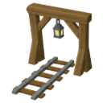
Descend beyond the abandoned mineworks and map a shaft no surveyor has returned from.
| Property | Value |
|---|---|
| Where | 🕳️ Deepstone Mines |
| Needs | Combat 45 · ⛏️ Mining 45 · 🍖 Cooking 45 |
| Fee | 🪙 40,000 coins, paid at the start |
| Supplies | 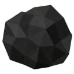 Coal ×80 |
| Takes | 18 min |
| Rewards | 🪙 42,000 coins 1,473 ⛏️ Mining XP 607 ❤️ Constitution XP 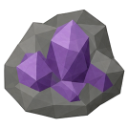 Amethyst Ore ×60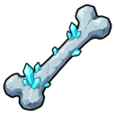 Deep Bones ×10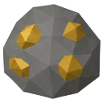 Gold Ore ×40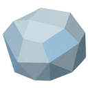 Rune Essence ×100 |
| Key fragment | 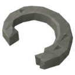 Blackshaft Key Fragment each run; 100 make a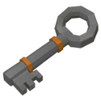 Blackshaft Warden Key |
⚱️ The Sunken Ossuary
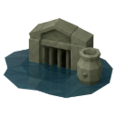
Seal the drowned catacombs beneath Bleakhaven before the restless dead reach the old city.
| Property | Value |
|---|---|
| Where | 🏚️ Bleakhaven Ruins |
| Needs | Combat 70 · ✝️ Prayer 50 · 🌿 Herbalism 60 · 🍖 Cooking 60 |
| Fee | 🪙 120,000 coins, paid at the start |
| Supplies | 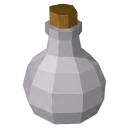 Defence Potion ×12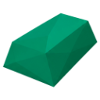 Viridian Bar ×18 |
| Takes | 30 min |
| Rewards | 🪙 127,000 coins 2,427 ✝️ Prayer XP 1,127 🛡️ Defence XP 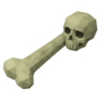 Lich Bones ×7Rune Essence ×80 |
| Key fragment | 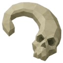 Ossuary Key Fragment each run; 100 make a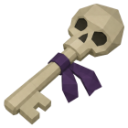 Ossuary Warden Key |
🌀 The Breach Beyond
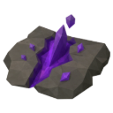
Cross the unstable rift, retrieve a fragment of its heart, and escape before the breach closes behind you.
| Property | Value |
|---|---|
| Where | 🌀 The Voidscar |
| Needs | Combat 90 · 💫 Runecrafting 80 · 🍖 Cooking 85 · ⚗️ Alchemy 75 |
| Fee | 🪙 320,000 coins, paid at the start |
| Supplies | 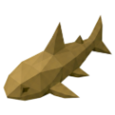 Shark ×70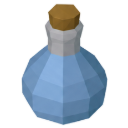 Super Defence Potion ×18Rune Essence ×500 |
| Takes | 48 min |
| Rewards | 🪙 335,000 coins 5,200 💫 Runecrafting XP 2,080 🔮 Sorcery XP 1,733 ❤️ Constitution XP 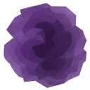 Dark Essence ×60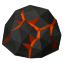 Ember Ore ×40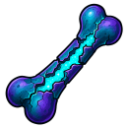 Void Bones ×25 |
| Key fragment | 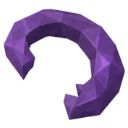 Breach Key Fragment each run; 80 make a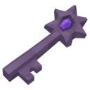 Breach Warden Key |
⚔️ Warden Hunts
Each hunt uses up one Warden Key and a coin fee for one fight against a region's guardian. Wardens can't be fought any other way and are never Slayer tasks. Each has its own trick, so come prepared.
⚙️ Blackshaft Warden Hunt
The Shaftwarden still keeps the sealed lower works, a furnace for a heart and a lantern for a head. It shrugs off blades but not spells, and every few blows its furnace vents and burns a piece of your food.
| Property | Value |
|---|---|
| Where | 🕳️ Deepstone Mines |
| Fights | 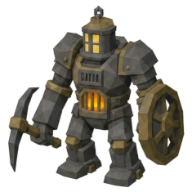 The Shaftwarden |
| Needs | Combat 55 · Blackshaft Warden Key |
| Fee | 🪙 200,000 coins, paid at the start |
| Rewards | 🪙 480,000 coins 2,080 🛡️ Defence XP 1,733 ❤️ Constitution XP 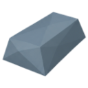 Crownsteel Bar ×40Dark Essence ×25 Rune Essence ×90 |
🕯️ Ossuary Warden Hunt
The Ossuary Matron tends the drowned dead. Every few blows she raises a shield of bone that turns most damage aside; an active blessing cracks it faster.
| Property | Value |
|---|---|
| Where | 🏚️ Bleakhaven Ruins |
| Fights | 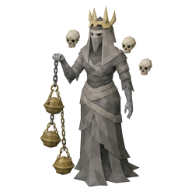 The Ossuary Matron |
| Needs | Combat 78 · Ossuary Warden Key |
| Fee | 🪙 480,000 coins, paid at the start |
| Rewards | 🪙 1,250,000 coins 3,467 ✝️ Prayer XP 3,120 🛡️ Defence XP Dark Essence ×70 Lich Bones ×45 |
🌀 Breach Warden Hunt
The Riftborn is half torn out of the breach. It shifts between three forms, each weak to melee, ranged or magic in turn and half as hurt by the others.
| Property | Value |
|---|---|
| Where | 🌀 The Voidscar |
| Fights | 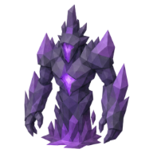 The Riftborn |
| Needs | Combat 98 · Breach Warden Key |
| Fee | 🪙 960,000 coins, paid at the start |
| Rewards | 🪙 2,330,000 coins 6,240 🔮 Sorcery XP 5,200 ❤️ Constitution XP 3,467 💀 Slayer XP Ember Ore ×45 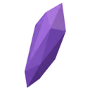 Void Shard ×55Dark Essence ×140 |